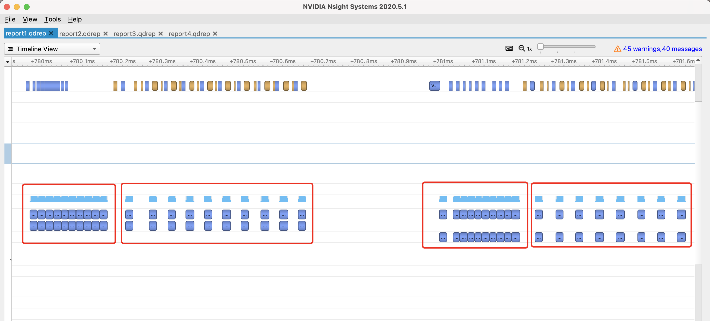
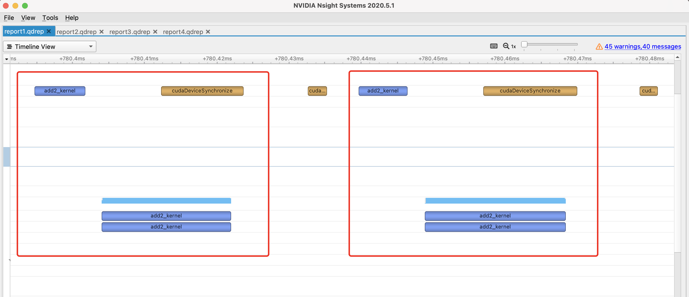
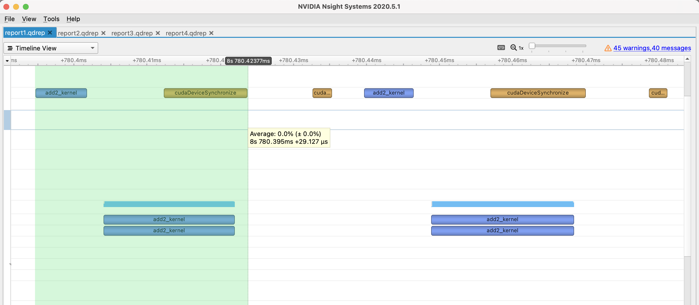
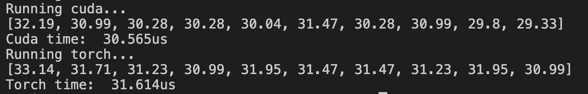
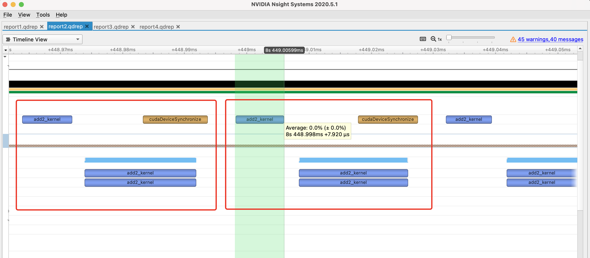
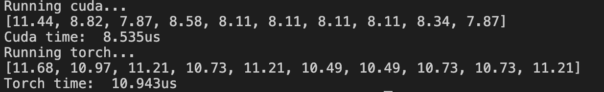
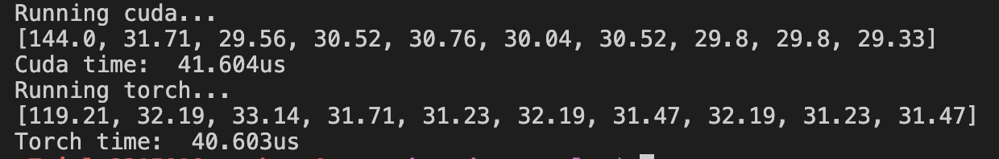
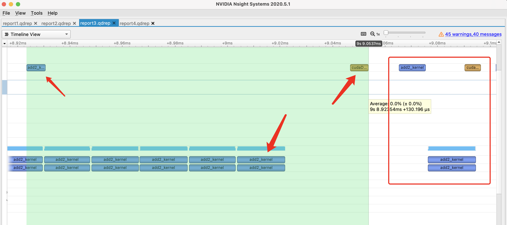
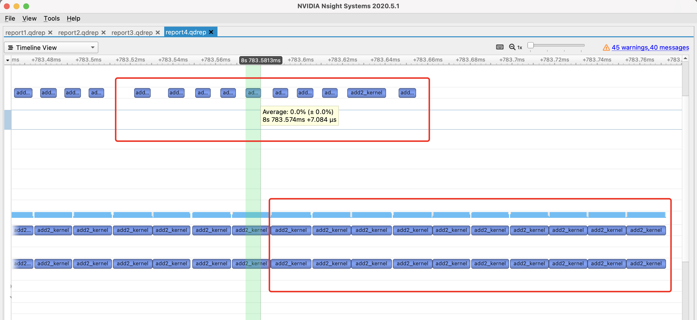

最近因为工作需要，学习了一波CUDA。这里简单记录一下PyTorch自定义CUDA算子的方法，写了一个非常简单的example，再介绍一下正确的PyTorch中CUDA运行时间分析方法。
所有的代码都放在了github上，地址是：
https://github.com/godweiyang/torch-cuda-example
完整流程
下面我们就来详细了解一下PyTorch是如何调用自定义的CUDA算子的。
首先我们可以看到有四个代码文件：
main.py，这是python入口，也就是你平时写模型的地方。add2.cpp，这是torch和CUDA连接的地方，将CUDA程序封装成了python可以调用的库。add2.h，CUDA函数声明。add2.cu，CUDA函数实现。
然后逐个文件看一下是怎么调用的。
CUDA算子实现
首先最简单的当属add2.h和add2.cu，这就是普通的CUDA实现。
void launch_add2(float *c,
const float *a,
const float *b,
int n);__global__ void add2_kernel(float* c,
const float* a,
const float* b,
int n) {
for (int i = blockIdx.x * blockDim.x + threadIdx.x; \
i < n; i += gridDim.x * blockDim.x) {
c[i] = a[i] + b[i];
}
}
void launch_add2(float* c,
const float* a,
const float* b,
int n) {
dim3 grid((n + 1023) / 1024);
dim3 block(1024);
add2_kernel<<<grid, block>>>(c, a, b, n);
}这里实现的功能是两个长度为$n$的tensor相加，每个block有1024个线程，一共有$n/1024$个block。具体CUDA细节就不讲了，本文重点不在于这个。
add2_kernel是kernel函数，运行在GPU端的。而launch_add2是CPU端的执行函数，调用kernel。注意它是异步的，调用完之后控制权立刻返回给CPU，所以之后计算时间的时候要格外小心，很容易只统计到调用的时间。
Torch C++封装
这里涉及到的是add2.cpp，这个文件主要功能是提供一个PyTorch可以调用的接口。
#include <torch/extension.h>
#include "add2.h"
void torch_launch_add2(torch::Tensor &c,
const torch::Tensor &a,
const torch::Tensor &b,
int n) {
launch_add2((float *)c.data_ptr(),
(const float *)a.data_ptr(),
(const float *)b.data_ptr(),
n);
}
PYBIND11_MODULE(TORCH_EXTENSION_NAME, m) {
m.def("torch_launch_add2",
&torch_launch_add2,
"add2 kernel warpper");
}torch_launch_add2函数传入的是C++版本的torch tensor，然后转换成C++指针数组，调用CUDA函数launch_add2来执行核函数。
这里用pybind11来对torch_launch_add2函数进行封装，然后用cmake编译就可以产生python可以调用的.so库。但是我们这里不直接手动cmake编译，具体方法看下面的章节。
Python调用
最后就是python层面，也就是我们用户编写代码去调用上面生成的库了。
import time
import numpy as np
import torch
from torch.utils.cpp_extension import load
cuda_module = load(name="add2",
sources=["add2.cpp", "add2.cu"],
verbose=True)
# c = a + b (shape: [n])
n = 1024 * 1024
a = torch.rand(n, device="cuda:0")
b = torch.rand(n, device="cuda:0")
cuda_c = torch.rand(n, device="cuda:0")
ntest = 10
def show_time(func):
times = list()
res = list()
# GPU warm up
for _ in range(10):
func()
for _ in range(ntest):
# sync the threads to get accurate cuda running time
torch.cuda.synchronize(device="cuda:0")
start_time = time.time()
r = func()
torch.cuda.synchronize(device="cuda:0")
end_time = time.time()
times.append((end_time-start_time)*1e6)
res.append(r)
return times, res
def run_cuda():
cuda_module.torch_launch_add2(cuda_c, a, b, n)
return cuda_c
def run_torch():
# return None to avoid intermediate GPU memory application
# for accurate time statistics
a + b
return None
print("Running cuda...")
cuda_time, _ = show_time(run_cuda)
print("Cuda time: {:.3f}us".format(np.mean(cuda_time)))
print("Running torch...")
torch_time, _ = show_time(run_torch)
print("Torch time: {:.3f}us".format(np.mean(torch_time)))这里6-8行的torch.utils.cpp_extension.load函数就是用来自动编译上面的几个cpp和cu文件的。最主要的就是sources参数，指定了需要编译的文件列表。然后就可以通过cuda_module.torch_launch_add2，也就是我们封装好的接口来进行调用。
接下来的代码就随心所欲了，这里简单写了一个测量运行时间，对比和torch速度的代码，这部分留着下一章节讲解。
总结一下，主要分为三个模块：
- 先编写CUDA算子和对应的调用函数。
- 然后编写torch cpp函数建立PyTorch和CUDA之间的联系，用pybind11封装。
- 最后用PyTorch的cpp扩展库进行编译和调用。
运行时间分析
我们知道，CUDA kernel函数是异步的，所以不能直接在CUDA函数两端加上time.time()测试时间，这样测出来的只是调用CUDA api的时间，不包括GPU端运行的时间。
所以我们要加上线程同步函数，等待kernel中所有线程全部执行完毕再执行CPU端后续指令。这里我们将同步指令加在了python端，用的是torch.cuda.synchronize函数。
具体来说就是形如下面代码：
torch.cuda.synchronize()
start_time = time.time()
func()
torch.cuda.synchronize()
end_time = time.time()其中第一次同步是为了防止前面的代码中有未同步还在GPU端运行的指令，第二次同步就是为了等fun()所有线程执行完毕后再统计时间。
这里我们torch和cuda分别执行10次看看平均时间，此外执行前需要先执行10次做一下warm up，让GPU达到正常状态。
我们分别测试四种情况，分别是：
- 两次同步
- 第一次同步，第二次不同步
- 第一次不同步，第二次同步
- 两次不同步
这里我们采用英伟达的Nsight Systems来可视化运行的每个时刻指令执行的情况。
安装命令为：
sudo apt install nsight-systems然后在运行python代码时，在命令前面加上nsys profile就行了：
nsys profile python3 main.py然后就会生成report1.qdstrm和report1.sqlite两个文件，将report1.qdstrm转换为report1.qdrep文件：
QdstrmImporter -i report1.qdstrm最后将生成的report1.qdrep文件用Nsight Systems软件打开，我这里是mac系统。
两次同步
这是正确的统计时间的方法，我们打开Nsight Systems，放大kernel运行那一段可以看到下图：

其中第1和第3个框分别是cuda和torch的GPU warm up过程，这部分没有进行线程同步（上面的黄色块）。
而第2和第4个框就分别是cuda和torch的加法执行过程了，我们可以放大来看看。

可以看出，每执行一次（一个框）都经过了三个步骤：先是调用api（左上角蓝色框），然后执行kernel（下方蓝色框），最后线程同步（右上角黄色框）。
所以最后算出来的时间就是这三个步骤的耗时，也就是下图选中的范围：

时间大概在29us左右，和我们实际代码测出来的也是比较接近的：

其实我们实际想要知道的耗时并不包括api调用和线程同步的时间，但是这部分时间在python端不好去掉，所以就加上了。
第一次同步，第二次不同步
放大每次执行的过程：

可以看出，虽然长的和上一种情况几乎一模一样，但是在api调用完之后，立刻就进行计时了，所以耗时只有8us左右，实际测出来情况也是这样的：

第一次不同步，第二次同步
我们先来看一下实际统计的时间：

很奇怪是不是，第一次运行耗时非常久，那我们可视化看看到底怎么回事：

可以看出，因为第一次开始计时前没有同步线程，所以在GPU warm up调用api完毕后，第一次cuda kernel调用就开始了。然后一直等到warm up执行完毕，才开始执行第一次cuda kernel，然后是线程同步，结束后才结束计时。这个过程非常长，差不多有130us左右。然后第二次开始执行就很正常了，因为kernel结束的同步相当于是下一次执行之前的同步。
两次不同步
先来看看执行情况：

可以看出因为没有任何同步，所有GPU warm up和cuda kernel的api调用全接在一起了，执行也是。所以计时只计算到了每个api调用的时间，差不多在7us左右。
上面四种情况，torch指令情形几乎一样，因此不再赘述。
小结
通过这篇文章，应该可以大致了解PyTorch实现自定义CUDA算子并调用的方法，也能知道怎么正确的测量CUDA程序的耗时。
当然还有一些内容留作今后讲解，比如如何实现PyTorch神经网络的自定义前向和反向传播CUDA算子、如何用TensorFlow调用CUDA算子等等。